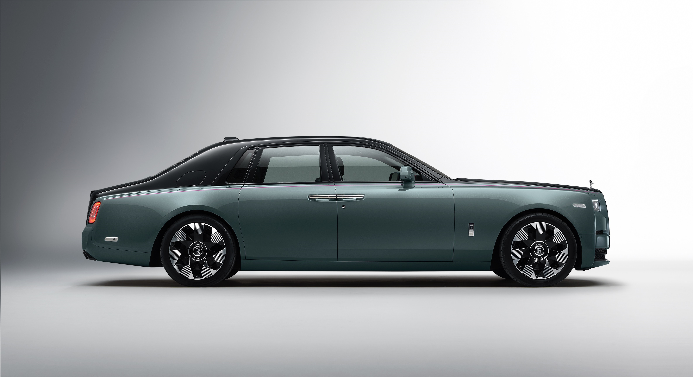
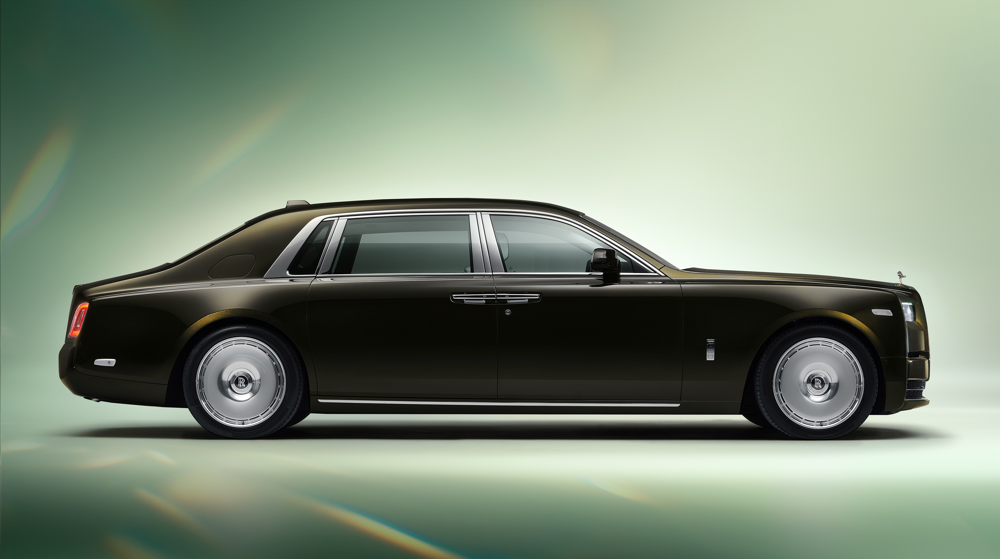
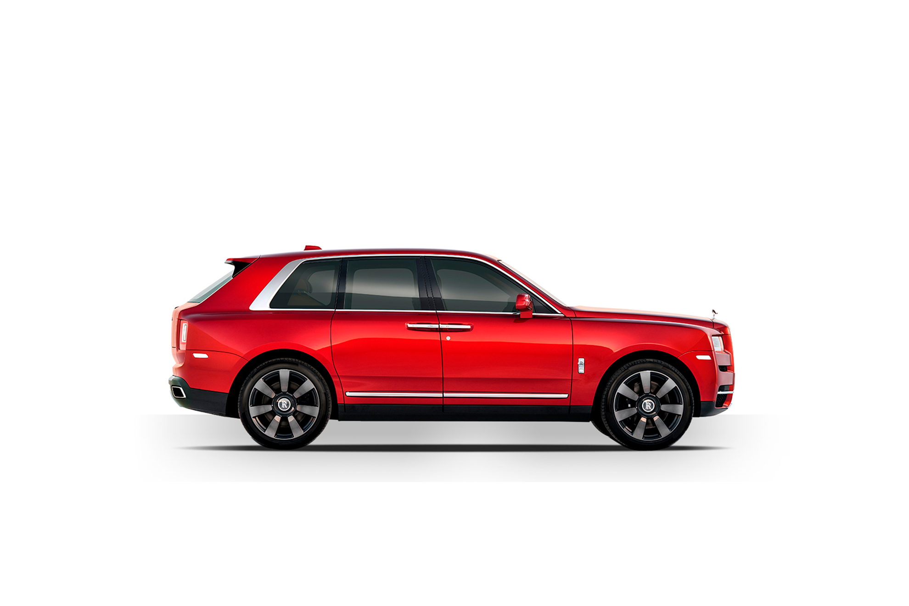

В 1998 году владельцы концерна Vickers решили избавиться от активов Rolls Roise Motors.
Наиболее привлекательным покупателем был немецкий автопроизводитель BMW, который уже
поставлял двигатели и компоненты для автомобилей Rolls-Royce и Bentley, но итоговое
предложение BMW, составившее ?340 млн, перебил другой немецкий автогигант Volkswagen,
предложивший ?430 млн.
VW получил от Vickers права на статуэтку Дух Экстаза и фирменную решётку радиатора Rolls-Royce,
на марку Bentley (включая логотип), модели (включая документацию по ним), производство и
производственные помещения, штаб-квартиру. Но VW остался без торговой марки и логотипа
Rolls-Royce в виде совмещённых букв RR, потому что машиностроительная компания Rolls-Royce plc,
имевшая в собственности права на их использование, решила сохранить их за собой в случае продажи
автомобильного подразделения. Rolls-Royce plc переуступила своё право на торговую марку и логотип
Rolls-Royce BMW за 40 млн. $, потому что обе фирмы имели совместные проекты.
Пункт в договоре BMW, на поставку двигателей и компонентов для Rolls-Royce Motors, позволял
расторгнуть договор и прекратить поставки, уведомив вторую сторону за год. VW был не в
состоянии в короткие сроки изменить конс трукцию выпускавшихся моделей для использования
других двигателей. Расколотый исторический облик Rolls-Royce (название и логотип, решетка
радиатора и Дух Экстаза), а также опасность остановки производства из-за поставок двигателей,
вынудил BMW и VW сесть за стол переговоров.
По итогам переговоров VW согласился продать BMW права на решетку радиатора и Дух Экстаза,
взамен на продолжение поставок двигателей и компонентов BMW на производство до 2003 года.
Также VW продолжал производить машины под маркой Rolls-Royce с 1998 по 2003 год, тем самым
давая BMW время на строительство штаб-квартиры, нового завода в Гудвуде (северо-восточнее
города Чичестер, графство Западный Суссекс) и разработку полностью новой модели Phantom.
Виды Rolls-Royce
SPECTRE
PHANTOM
НОВЫЙ ROLLS-ROYCE PHANTOM SERIES || ОЛИЦОТВОРЯЕТ СОБОЙ КЛАССИЧЕСКУЮ БРИТАНСКУЮ РОСКОШЬ,
КОТОРАЯ В СОЧЕТАНИИ С ИНОВАЦИОННЫМИ ТЕХНОЛОГИЯМИ ДЕЛАЕТ КАЖДУЮ ПОУЗДКУ В ЭТОМ
АВТОМОБИЛЕ ПО ИСТИНЕ КОМФОРТНОЙ И НЕПОВТРОИМОЙ

PHANTOM EXTENDED
ROLLS-ROYCE PHANTOM EXTENDED ПРЕДСТАВЛЯЕТ КАЖДОМУ ПАССАЖИРУ МАКСИМУМ СВОБОДНОГО
ПРОСТРВАНСТВА И СОЗДАЁТ ОЩУЩЕНИЕ ПЛАВНОГО ПОЛЁТА ДАЖЕ ПРИ ДВИЖЕНИЙ ПО НЕРОВНОМУ ПОКРЫТИЮ

CULLINAN
ВНЕДОРОЖНИК ROLLS-ROYCE CULLINAN - ЭТО РОСКОШЬ В ЧИСТОЙ ФОРМЕ В СОЧЕТАНИЙ С БЕЗУПРЕЧНОЙ
ПРАКТИЧНОСТЬЮ И ПРЕВОСХОДНЫМИ ХАРАКТЕРИСТИКАМИ

GHOST
НОВЫЙ ROLLS-ROYCE CHOST - РОСКОШНЫЙ ЭЛЕГАНТНЫЙ АВТОМОБИЛЬ, ИДЕАЛЬНО СОЧЕТАЮЩИЙ В СЕБЕ
КЛАССИЧЕСКИЙ БРИТАНСКИЙ АРИСТОКРАТИЗМ С ПОТРЯСАЮЩЕЙ ДИНАМИКОЙ


 В 1998 году владельцы концерна Vickers решили избавиться от активов Rolls Roise Motors.
В 1998 году владельцы концерна Vickers решили избавиться от активов Rolls Roise Motors. Пункт в договоре BMW, на поставку двигателей и компонентов для Rolls-Royce Motors, позволял
Пункт в договоре BMW, на поставку двигателей и компонентов для Rolls-Royce Motors, позволял